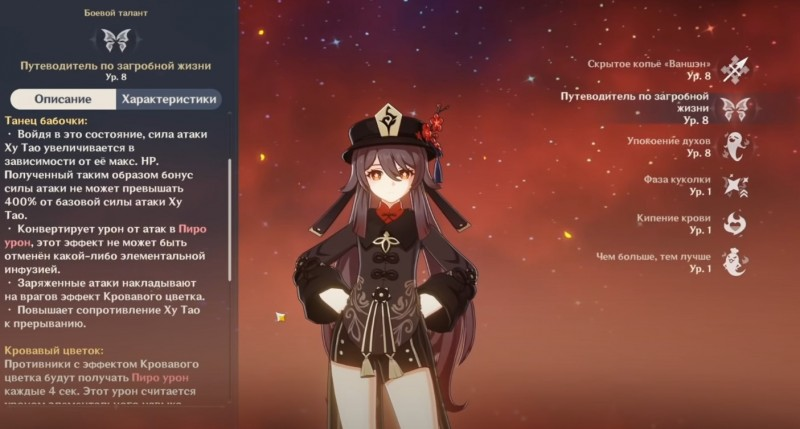
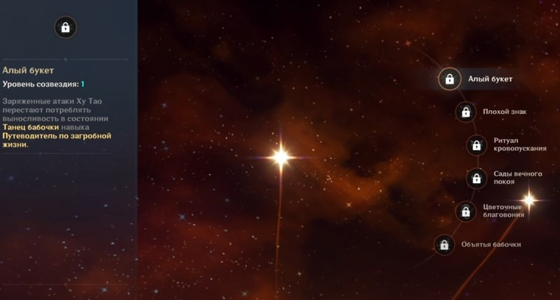

В Genshin Impact Ху Тао является 5-звездочным персонажем, относящимся к Пиро типу и мастерски владеющим копьем. В команде она может играть роль основного дамагера, нанося противникам огромный урон. В этом руководстве мы расскажем вам про лучшие билды, оружие и артефакты для этой огненной героини.
При выполнении стандартной атаки персонаж совершает до 6 ударов копьем, а заряженной (тратит выносливость) – осуществляет выпад, который наносит урон всем врагам, оказавшимся у нее на пути. Разумеется, не обошлось и без атаки в падении, при которой героиня падает на землю и бьет по площади.
Элементальное умение «Путеводитель по загробной жизни» позволяет оттолкнуть близкостоящих врагов и войти в режим «Танец бабочки», в котором показатель атаки хозяйки похоронного бюро значительно возрастает (зависит от максимального уровня здоровья), а обычный урон конвертируется в Пиро повреждения. К тому же у Ху Тао возрастает сопротивление к прерыванию, а ее заряженные удары приводят к появлению у противников эффекта Кровавый цветок (каждые 4 секунды они получают дополнительный Пиро урон).
Если Ху Тао переключить на другого персонажа во время Танца бабочки, то действие навыка тут же прекратится, поэтому мы советуем сначала подождать его завершения, затем взять иного члена отряда, использовать его «ульту», щит или исцеляющую способность (если здоровье героини близко к критическому), а потом вновь перейти на основного DPS. К тому времени элементальная способность уже восстановится, и ее можно будет снова активировать. Все это позволяет создавать мощные стихийные комбинации (Таяние, Перегрузку или Пар).
Однако мы не советуем злоупотреблять «Путеводителем по загробной жизни», иначе можно оставить героиню без жизней (умереть от способности она не может). Впрочем, если в вашей команде имеются бойцы, способные накладывать щит, то вы можете специально держать Ху Тао с малым количеством здоровья, чтобы увеличить наносимый ею урон.
Что касается взрыва стихии «Упокоение духов», то он наносит большой Пиро урон по площади и восстанавливает определенное значение максимального HP хозяйке похоронного бюро, зависящим от числа задетых врагов. Если у персонажа шкала здоровья равна или меньше 50 процентам, то он наносит еще больше урона и восстанавливает дополнительные очки жизни. Это еще один повод держать Ху Тао с низким здоровьем, защищая ее щитами.
Если же говорить о пассивных умениях, то они предоставляют следующие бонусы:
Фаза куколки – при входе в режим Танец бабочки вероятность нанесения критического урона у всех членов команды, за исключением самой Ху Тао, повышается на 12 процентов (эффект работает 8 секунд).
Кипение крови – если шкала жизни героини достигнет или упадет ниже 50 процентов, то ее Пиро урон возрастет на 33 процента.
Чем больше, тем лучше – в случае идеальной готовки блюда с 18-процентной вероятностью создается «странное» блюдо того же вида.
Они открываются с помощью «удачи персонажа», добываемой путем выпадения копий героя во время молитв. Учитывая рандомность этого процесса, вам сильно повезет, если вы сможете разблокировать все представленные ниже таланты. Советуем вам остановиться на С1, так как он полезен как новичкам, так и ветеранам. Остальные созвездия приносят пользу лишь в зависимости от ситуации и при этом стоят слишком дорого.
